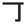

)with the "open scissors" (
)with the "open scissors" ( )radical:
)radical:
Open scissors doesn't have a 'nail-head' protruding from the right-side, and it's got no bendy bit at the bottom.
|  | nailright |
| CHOU |
|
The only time Margaret CHO ever could make me laugh was when she stepped on a rusty nail and had to get tetanus. That was a good bit. |
| xxx 丁目 |
city block
★★★★☆
KUN ONCOUNTER
a COUNTER for - roughly, 'city block.' 3丁目, 4丁目, etc. You need to know this if you ever want to read an address. |
| 丁度 |
just right
★★★☆☆
1/2 KANA
exactly, precisely. Just right. |
| 丁寧 な |
politeness ★★☆☆☆ 1/2 KANA manners used in everyday situations. Just good common sense. |
| 包丁 |
kitchen knife, cutlery
★☆☆☆☆
|
|
polite
礼儀 丁寧 |
 KANJIDAMAGE
KANJIDAMAGE
 Number
51
Number
51